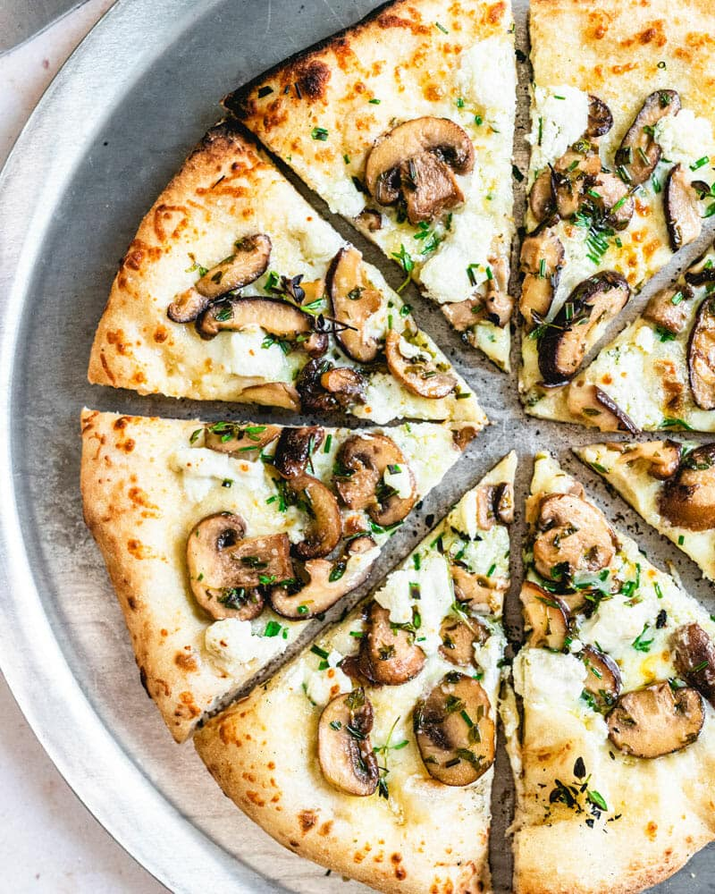

Chinese cuisine is an important part of Chinese culture, which includes cuisine originating from the diverse regions of China, as well as from Chinese people in other parts of the world. Because of the Chinese diaspora and historical power of the country, Chinese cuisine has influenced many other cuisines in Asia, with modifications made to cater to local palates. The preference for seasoning and cooking techniques are also influenced by the availability of ingredients.
Food is a fundamental aspect of human life, providing nourishment and pleasure. Different cultures have unique culinary traditions that reflect their history, geography, and social practices.
Pizza

Pizza (Italian: [ˈpittsa]) is a popular dish consisting of a flatbread base topped with tomato sauce, cheese, and various other ingredients (such as anchovies; mushrooms, olives, tomatos, onions etc.) which is baked in high temperature, traditionally in a wood-fired oven.Pizza (Italian: [ˈpittsa]) is a popular dish consisting of a flatbread base topped with tomato sauce, cheese, and various other ingredients (such as anchovies; mushrooms, olives, tomatos, onions etc.) which is baked in high temperature, traditionally in a wood-fired oven.